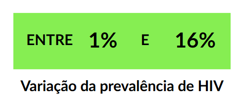
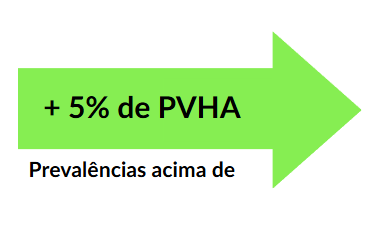
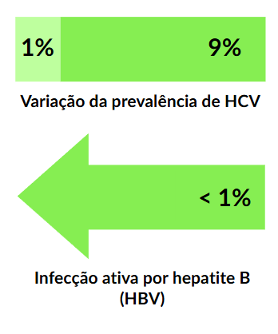
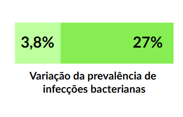
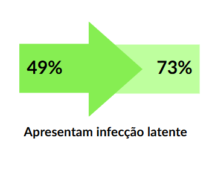
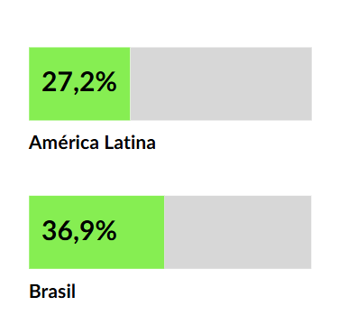
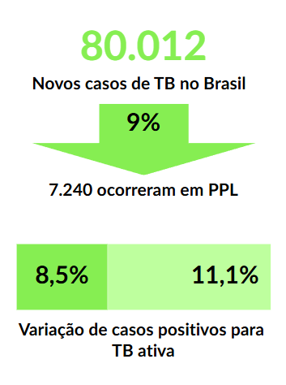
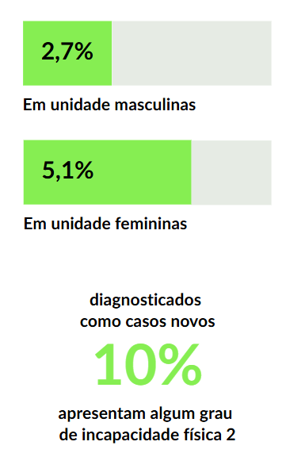

Apresentação da Unidade
Olá, estudante-trabalhador! Seja bem-vindo!
Esta Unidade é voltada para ampliar os seus conhecimentos e suas habilidades como profissional de saúde no cuidado das pessoas privadas de liberdade (PPL). Identificar, quantificar, diagnosticar, prescrever, tratar e acompanhar são verbos que sem dúvida são conjugados na prática diária da maioria dos estudantes-trabalhadores. Esta Unidade vai além de repetir diretrizes que você já aplica no dia a dia. O objetivo é examinar os agravos mais prevalentes no território e traçar estratégias práticas para qualificar o cuidado à população privada de liberdade.
A rotina de trabalho no sistema prisional é pautada primariamente pela segurança e organização da disciplina local, portanto as atividades relacionadas a isso são sempre priorizadas. Não se preocupe se isso parece desafiador. Nosso objetivo aqui é apresentar maneiras de superar os diferentes desafios que surgem no dia a dia.
É evidente que a epidemiologia de diversos agravos incidentes no sistema prisional é conhecida por muitos. Tuberculose, HIV/Aids, infecções sexualmente transmissíveis (ISTs), hepatites e demais doenças transmissíveis são frequentemente lembradas em discussões sobre PPL devido às vulnerabilidades dessa população, bem como transtornos psiquiátricos e abuso de substâncias. Contudo, não devemos nos esquecer de que, apesar de privados da liberdade, esses indivíduos apresentam as mesmas queixas e doenças atendidas rotineiramente nas Unidades Básicas de Saúde (UBS). O controle da hipertensão, da diabetes, da síndrome metabólica e de outras doenças não transmissíveis também faz parte dessa rotina.
Capacidade de percepção da epidemiologia local e flexibilização de rotinas são duas habilidades fundamentais para a facilitação dos cuidados em saúde nessas unidades. Nosso desejo é que essa Unidade e os materiais complementares ajudem você, estudante-trabalhador, na superação desses desafios diários. Bons estudos!
Objetivos de Aprendizagem da Unidade
Descrever os principais desafios de acesso da pessoa privada de liberdade a consultas, exames e terapêuticas;
Identificar os agravos e as doenças mais prevalentes na população privada de liberdade;
Conhecer os protocolos nacionais de conduta terapêutica para os agravos transmissíveis e não transmissíveis mais prevalentes;
Reconhecer as práticas de intervenções em saúde com base na epidemiologia e aspectos organizacionais locais;
Identificar protocolos e rotinas institucionais adaptados à realidade local;
Conhecer aspectos da Rede de Atenção à Saúde para o cuidado integral da pessoa privada de liberdade.
Carga Horária de Estudo: 10 horas
1.1 Rotina de trabalho no sistema prisional
O cotidiano dos estabelecimentos penais é caracterizado pela hipervigilância, por regramentos rígidos e pelo controle da rotina e de itens materiais que circulam no território (Kunze, 2012). A arquitetura desses estabelecimentos é planejada para possibilitar o monitoramento e a limitação da circulação dos indivíduos, bem como garantir a segurança dos trabalhadores que ali transitam. É evidente que, nesse ambiente em que o controle é rigoroso, todo o trabalho em saúde desenvolvido é condicionado à rotina geral da instituição penal, não apenas o atendimento de urgência e emergência, que depende de escolta de transporte. É muito importante ressaltar logo no início de nossas discussões que todas as ações em saúde realizadas no ambiente prisional necessitam da participação dos gestores da administração penitenciária da instituição penal, precisamente pelos motivos citados.
O acesso das PPL aos serviços de saúde não é livre nem imediato, já que depende da disponibilidade de escolta e da rotina operacional estabelecida pela polícia penal. Em instituições de regime fechado em geral, por exemplo, o atendimento direto às PPL costuma ser iniciado apenas após a conferência dos indivíduos nas celas. Em outras, é necessário aguardar a abertura dos pavilhões para que as PPL possam circular. Em estabelecimentos com maior grau de segurança ou com efetivo reduzido, há frequentemente um revezamento dos turnos em que os pavilhões são abertos, o que limita o acesso das PPL à Atenção Primária à Saúde Prisional (APS Prisional) durante períodos específicos do dia. Exceções a essa rotina geralmente ocorrem em situações de urgência, como trauma, rebaixamento do nível de consciência ou mal súbito, ou ainda quando são identificados, durante a conferência matinal, sintomas mais graves que exigem atendimento imediato.
O ambiente do setor de saúde nos estabelecimentos muitas vezes é compartilhado por diferentes profissionais, como assistentes sociais, psicólogos, nutricionistas, triagem ou demais profissionais da administração penitenciária, além de médicos e enfermeiros.
Como os atendimentos exigem escolta até a APS Prisional e vários profissionais de saúde precisam atender simultaneamente, há uma limitação na oferta de vagas, o que torna o trabalho em saúde nos estabelecimentos penais complexo.
Talvez o momento de maior desafio à PPL seja o acesso aos atendimentos na APS Prisional. Em geral, indivíduos solicitam acesso à APS Prisional de quatro maneiras (Teixeira Junior, 2024):
1
Solicitação de consulta por recados ou bilhetes (bereus, catataus, catu, entre outros), como referido em algumas regiões do Brasil. O indivíduo escreve de próprio punho em um papel ou no formulário padronizado o motivo da solicitação de atendimento (sintomas, medicações de uso contínuo etc.). Esses papéis são recolhidos diariamente ou semanalmente por trabalhadores e levados à equipe da Atenção Primária Prisional (eAPP) para análise;
2
Solicitação direta por policiais penais ao perceberem sintomas/doença aparentes;
3
Solicitação de consulta ou avaliações de saúde por meio de advogados e familiares;
4
Retorno da PPL de internações com relatórios para acompanhamento de doenças ou transferências de outros estabelecimentos penais com prontuário médico.
O acesso em que há maior fragilidade é a busca por atendimento por meio de bilhetes. Muitas vezes, as PPL têm dificuldade de expressar seus sintomas ou necessidades devido à falta de compreensão sobre o que sentem e à limitação na habilidade de comunicação. Por isso, é fundamental que todas as solicitações sejam cuidadosamente lidas e que a equipe desenvolva processos de trabalho que possibilitem um acolhimento responsável das queixas (Diuana et al., 2008).
Outro desafio é fazer a manutenção do cuidado continuado, que requer o deslocamento da PPL das instituições penais para as unidades de referência e preservação das informações de saúde dela. O prontuário da PPL, nas transferências entre instituições penais ou no retorno das Unidades Básicas de Saúde (UBS), pode ser perdido.
Para superar esses desafios e auxiliar nas transferências, é fundamental que exista uma rede de contato entre as equipes de saúde da rede municipal de saúde e a eAPP. Em algumas cidades, a rede municipal de saúde tem unidades de saúde de referência para onde as PPL são encaminhadas para internação e emergências. Essa definição facilita o contato prévio de referenciamento e contrarreferenciamento, visando a um encaminhamento mais responsável e ajustado com a escolta policial para garantir a segurança dos profissionais e das PPL. A adesão da UBS ao uso do prontuário eletrônico e-SUS é recomendada a fim de melhorar a organização de prontuários e acessibilidade dos demais profissionais ao atendimento (Costa et al., 2022).
Por fim, é essencial ajustar a rotina de trabalho de acordo com os fatores expostos anteriormente (Teixeira Junior, 2024). Vamos resumir os principais desafios:
- Horários e dias de atendimento limitados;
- Restrição do acesso espontâneo ao atendimento;
- Perda de informações na solicitação de consultas por terceiros, internações e atendimentos fora das instituições penais;
- Limitações de espaço físico da Unidade Básica de Saúde Prisional (UBSP);
- Dependência da escolta para transferências.
Em geral, a organização das agendas de atendimento médico, odontológico, entre outros, pode se assemelhar à de uma UBS tradicional, incluindo PPL regulares agendadas para retorno de seguimento e dias determinados para a coleta de exames laboratoriais. Contudo, diferentemente de uma UBS tradicional, a população atendida não tem a possibilidade de buscar assistência em outros serviços em caso de urgência. No período noturno, não há previsão de atendimento, exceto em situações emergenciais, que são atendidas pelo SAMU. Por isso, é importante que o profissional mantenha certa flexibilidade para atender queixas agudas durante o dia, mesmo na agenda regular.
Em instituições penais específicas, existem dias ou períodos fixos em que o atendimento não é possível. Veja no Quadro 1 situações que frequentemente você pode enfrentar e o que pode fazer.
Quadro 1 - Situações em que o atendimento é interrompido e possíveis maneiras de aproveitamento do tempo
Por que o atendimento fica suspenso?
Necessidade de mobilização do efetivo policial para inspeção.
O que a eAPP pode fazer nesse período?
- Atualizar prontuários e preencher notificações;
- Separar e registrar medicações de uso contínuo.
Contudo, a rotina prisional é marcada por imprevisibilidades. Revistas nas celas ou alterações de segurança podem, sem aviso prévio, inviabilizar os atendimentos. Por isso, é essencial que a eAPP mantenha um registro próprio de sua agenda e das PPL que dependem de medicações de uso contínuo, como anti-hipertensivos, antidiabéticos, antirretrovirais e antibióticos de uso prolongado.
Embora o controle de medicações seja uma atribuição da assistência farmacêutica, na ausência de farmacêuticos nas UBS do sistema prisional - uma lacuna ainda comum -, muitas equipes assumem essa tarefa. A literatura já discute essa problemática, destacando a importância da presença do profissional farmacêutico para qualificar o cuidado e garantir a continuidade dos tratamentos (Ferreira et al., 2025).
1.2 Epidemiologia dos agravos das pessoas privadas de liberdade
O Relatório de Informações Penais (RELIPEN) (Brasil, 2024a) informa que, em junho de 2024, a população privada de liberdade em celas físicas no Brasil era de 663.387 indivíduos, dos quais 4,3% (28.770 pessoas) eram mulheres. A maioria tinha entre 18 e 45 anos (85%) e se autodeclarava como preta ou parda (64%). Também observa-se que havia 9.424 (1,4%) pessoas com deficiência, predominantemente física e intelectual. Quase metade das PPL (49,5%) tinha nível educacional inferior ao ensino fundamental completo, enquanto apenas 0,8% delas apresentava curso superior completo. Com relação às atividades realizadas, 23,8% estavam realizando atividades laborais e 17,8% estavam em atividades educacionais. Veja o infográfico abaixo:
Podemos então traçar um perfil demográfico da PPL brasileira média: homem jovem, preto ou pardo, com baixo nível educacional e com poucas oportunidades para continuação de sua educação ou capacitação profissional intramuros.
Essas questões apresentadas têm relação não só com os agravos intramuros que as PPL podem sofrer, mas também com problemas enfrentados por elas após a saída do estabelecimento penal. Em um estudo, Liu et al., 2021, ao avaliarem óbitos entre PPL e pessoas com histórico de aprisionamento, identificaram não apenas que o risco de óbito por qualquer causa é 30% maior nos estabelecimentos penais em comparação com a população em geral, mas também que esse risco se mantém mais elevado por até 8 anos após a soltura, chegando a ser até 3 vezes maior nos primeiros 2 anos. Em sua maioria, os óbitos no regime fechado masculino tiveram como causas agressões, doenças infecciosas e suicídio, representando 33,6%, 11,9% e 8,2% das mortes, respectivamente. O estudo também identificou que o número de óbitos nos estabelecimentos penais identificados pelo Sistema de Informações sobre Mortalidade (SIM) era 2,2 vezes maior do que o relatado pelo Departamento Penitenciário Nacional (DEPEN) e o Sistema Integrado de Gestão Operacional (SIGO), refletindo uma fragilidade nos sistemas de notificação atuais. No Saiba mais, discutimos esses dados mais detalhadamente, demonstrando essa fragilidade na notificação dos agravos.
Apesar da alta incidência de óbitos por doenças infecciosas e violência, as causas não infecciosas, como doenças cardiovasculares e neoplasias, também são relevantes para a mortalidade em estabelecimentos penais. Limitações com relação ao acesso à saúde antes, durante e depois do aprisionamento provocam complicações de doenças crônicas, diagnósticos tardios ou tratamentos incompletos. Agora, o que você acha de discutirmos todas essas questões com mais profundidade?
1.3 Epidemiologia das doenças infecciosas nos estabelecimentos penais
Na seção anterior, demonstramos a relevância da temática das doenças infecciosas nas instituições penais. Múltiplos agravos contribuem para o estabelecimento desse cenário epidemiológico. Agora, estudante-trabalhador, vamos discutir os desafios no manejo das patologias que você mais frequentemente encontrará no seu dia a dia de trabalho.
1.3.1 HIV/Aids, hepatites virais B e C e infecções sexualmente transmissíveis
A história do início da epidemia de ISTs no Brasil não pode ser contada sem que se considere a situação epidemiológica nos sistemas prisionais. Essa situação epidemiológica, por sua vez, não pode ser compreendida sem que se considere a história da Casa de Detenção de São Paulo, o Carandiru (Varella, 2004). Poucos anos após a detecção dos primeiros casos de HIV e hepatite C (HCV), já se percebia uma grande incidência dessas doenças nas instituições penais brasileiras. Em estudos iniciais, demonstrou-se que, à época, 17,3% dos homens cis e 78% das mulheres trans que cumpriam pena no Carandiru viviam com o HIV e mais da metade (58%) das PPL estava infectada com hepatite C (Varella, 2004).
Entre os principais fatores de risco para a infecção pelo HIV, sem contar a exposição sexual desprotegida, estava o uso de cocaína injetável, extremamente comum à época. É evidente que, em uma época em que o uso da terapia antirretroviral (TARV) era restrita ou inexistente, a maioria das PPL inevitavelmente faleceu de complicações decorrentes de infecções oportunistas (IO). O cenário de saúde trágico estabelecido nessa instituição penal por muitos anos trouxe à tona discussões sobre os cenários da epidemia (pouco reconhecida à época) de HIV no país, bem como diferentes estratégias de intervenção. Veja no Quadro 2 quais foram as principais mudanças que contribuíram para a redução da incidência dessas doenças.
Quadro 2 - Mudanças ocorridas ao longo do tempo no cenário epidemiológico das ISTs no sistema prisional
Situação anterior:
Circulação restrita de orientações; baixa oferta de preservativos e tratamentos.
Mudanças:
Campanhas de saúde sobre ISTs; distribuição de preservativos; disponibilização de tratamento que evita transmissão.

Ainda assim, em 2025, o cenário nos estabelecimentos penais brasileiros ainda é variado. Com relação ao HIV, as prevalências variam de 1% a 16% nas instituições penais (Tanaka et al., 2022) e foram identificadas falhas no acesso ao tratamento adequado mesmo com sua ampla disponibilidade pelo SUS (Sgarbi et al., 2015).
Os dados que demostram prevalências acima de 5% de PVHA no sistema prisional são mais antigos. Uma evidência de 2022 indica que a prevalência da doença no sistema prisional se tornou semelhante à da população em geral na maioria das situações (Tanaka et al., 2022).


Ainda assim, em 2025, o cenário nos estabelecimentos penais brasileiros ainda é variado. Com relação ao HIV, as prevalências variam de 1% a 16% nas instituições penais (Tanaka et al., 2022) e foram identificadas falhas no acesso ao tratamento adequado mesmo com sua ampla disponibilidade pelo SUS (Sgarbi et al., 2015). Houve também uma queda considerável na incidência das hepatites, com a prevalência de HCV variando entre 1% e 9% (Puga et al., 2017) e de infecção ativa por hepatite B (HBV) de menos de 1% (Rezende et al., 2020). A introdução da vacina contra HBV no calendário vacinal e a queda no uso de drogas injetáveis contribuíram fortemente para essa redução.
Com relação às infecções bacterianas, principalmente sífilis e uretrites purulentas, poucos estudos foram realizados nos ambientes prisionais. Sabemos que a epidemia de sífilis tem se expandido vertiginosamente nos últimos anos na população em geral (Brasil, 2024c). Como é frequente, um aumento de prevalência na população em geral é indício de aumento de prevalência na população privada de liberdade. Embora não haja dados robustos para fazer essa comprovação, um estudo demonstrou alta frequência de infecção ativa na população privada de liberdade, com prevalência de 3,8%, chegando a 27% em mulheres trans (Correa et al., 2017).

Também não há estudos específicos sobre a incidência das uretrites purulentas nas instituições penais. O diagnóstico etiológico preciso é um desafio, uma vez que raramente essas instituições contam com exames de cultura ou PCR para Neisseria gonorrhoeae e Chlamydia trachomatis, restando o diagnóstico clínico das lesões. Devido às condições de higiene precárias, quadros de balanopostite causada por Candida ou bactérias comensais são comuns, frequentemente gerando incertezas no diagnóstico por sua similaridade clínica com as ISTs.
Infecções pelo HPV também são encontradas com frequência nos estabelecimentos penais femininos. Um estudo de 2024 com citologia de exame de colo do útero demonstrou que até 5,8% das mulheres apresentam anormalidades citológicas e que 87,1% dos genótipos de HPV encontrados são de alto risco (Zonta et al., 2024).
1.3.2 Tuberculose
A tuberculose (TB) é possivelmente o maior desafio de saúde pública, em âmbito mundial, nos estabelecimentos penais. A transmissão ocorre reconhecidamente com mais facilidade em ambientes superlotados e com ventilação e iluminação prejudicadas, tornando-a universalmente presente em instituições penais. A alta rotatividade de PPL entre instituições ou entre as celas e alas do mesmo estabelecimento também propicia uma alta interposição entre casos de TB ativa e pessoas sem contato prévio com a doença. O reflexo mais evidente dessa situação é a alta incidência de novas infecções em ambientes prisionais, em comparação com a população em geral, detectadas por meio da conversão da prova tuberculínica (PPD) ou de testes de liberação de interferon gama (IGRA).

Em estudos de testagem em massa, entre 49% e 73% das PPL apresentaram infecção latente pelo Mycobacterium tuberculosis (ILTB) e foi identificado que o tempo de privação de liberdade estava associado ao risco de contrair a infecção (Carbone et al., 2015; Lemos; Matos; Bittencourt, 2009; Estevan; Oliveira; Croda, 2013; Abrahão; Nogueira; Malucelli, 2006; Nogueira; Abrahão; Galesi, 2012).
Infelizmente, a transmissão da doença não acontece apenas nos estabelecimentos penais. Nos últimos anos, apesar da queda global no número de casos de TB, uma região do globo registrou aumento: a América Latina. Um estudo com modelos matemáticos demonstrou que, com o aprisionamento em massa na região, que quase quadruplicou a população privada de liberdade de 1990 a 2024, a proporção de transmissão da doença atribuível às instituições penais foi de 27,2% na América Latina e de 36,9% no Brasil (Liu et al., 2024). Um estudo brasileiro também demonstrou, utilizando dados genéticos das cepas de Mycobacterium tuberculosis de dentro e fora das instituições penais, que 50,6% dos casos de TB em pessoas sem histórico de privação de liberdade estavam diretamente ligados a amostras de dentro do sistema prisional, ou seja, as linhas de transmissão não são limitadas pelos muros e grades (Walter et al., 2022).

Com base no exposto aqui e na seção anterior sobre HIV/Aids, hepatites e ISTs, fica evidente que o enfrentamento das doenças infecciosas ultrapassa os limites individuais e até institucionais. Estudante-trabalhador, o seu trabalho nas instituições penais geralmente terá um reflexo na saúde da sua região como um todo. A responsabilidade com o tratamento e cuidado dessas PPL é fundamental para o controle desses agravos em toda a coletividade. Casos de TB ativa não identificados ou não tratados adequadamente mantêm transmissão para colegas de cela, familiares e trabalhadores da saúde e do sistema prisional, fazendo com que a doença retorne mais uma vez para a população em geral.

No Brasil, em 2023, foram identificados 80.012 novos casos de TB, dos quais 7.240 (9%) ocorreram em PPL (Brasil, 2024d). Em uma avaliação de busca ativa de casos realizada em Mato Grosso do Sul, em que toda a população privada de liberdade foi testada simultaneamente com raio-X de tórax e avaliação de escarro, entre 8,5% e 11,1% dos avaliados testaram positivo para TB ativa (Araujo et al., 2024). Na epidemiologia das doenças infecciosas, raramente se evidencia uma relação tão íntima de uma doença frequente como a TB com uma população específica.
É importante que o seu trabalho como profissional da saúde prisional esteja articulado aos serviços de controle de TB do seu município. As PPL que comparecem a consultas com sintomas respiratórios devem ter suas queixas valorizadas, independentemente do tempo de evolução desses sintomas, e as rotinas para coleta de exames e análise de escarro com os laboratórios da sua região devem ser pactuadas para que essas PPL tenham acesso rápido ao diagnóstico.
1.3.3 Infecções cutâneas
Considerando as condições insalubres e a superlotação dos estabelecimentos penais, é provável que você, estudante-trabalhador, que trabalha nesse ambiente, enfrente desafios diários relacionados ao diagnóstico das diversas infecções de pele. Não estão disponíveis estudos nacionais que exponham a prevalência dessas infecções nas instituições penais brasileiras. Como referência, sugerimos o uso do Guia Prático de Dermatologia na Atenção Primária (Brasil, 2024e), produzido pelo Ministério da Saúde, para apoiar no diagnóstico e manejo desses agravos.

De forma semelhante à tuberculose, a transmissão de hanseníase também é facilitada pela lotação das celas, já que ocorre por via respiratória. Em 2022, o Brasil notificou 19.635 novos casos de hanseníase, contudo sem quantificar a proporção de casos entre PPL (Brasil, 2024f). Apenas dois estudos de busca ativa de casos com diferentes metodologias em instituições penais foram realizados e evidenciaram prevalência de 2,7% em unidades masculinas e de 5,1% em unidades femininas (Bernardes Filho et al., 2020; Parente et al., 2022). Identificar precocemente essas situações clínicas é fundamental, tendo em vista que aproximadamente 10% dos pacientes diagnosticados como casos novos já apresentam algum grau de incapacidade física 2 (GIF2), que é caracterizado pela presença de deformidade física visível ou cegueira consequente da hanseníase (Brasil, 2024f). Fique atento!
Em alguns locais, as infecções mais frequentemente encontradas são: escabiose, infecções bacterianas superficiais (furunculose, impetigo e erisipela) e dermatofitoses simples (tinea e pitiríase versicolor). Frequentemente, há falha terapêutica inicial de algumas infecções, como as dermatofitoses e escabiose, devido à dificuldade do controle ambiental de lavagem de roupas, lençóis e colchões. Apesar de não constar de avaliações científicas, essas informações estão em relatórios inspecionais do sistema prisional (Sabino; Lemos; Guedes, 2024).
É necessário ter atenção em quadros difusos ou com apresentações clínicas variadas. Às vezes, mais de uma doença pode acometer a PPL simultaneamente e até quadros alérgicos e atópicos por contato com produtos de limpeza/higiene inapropriados nas celas.
1.4 Violência
Sobre o tema da violência e atendimento a PPL vítimas de trauma, vamos retomar o que foi discutido no início desta Unidade. Liu et al. (2021) mostraram que a maioria dos óbitos registrados nas instituições penais em Mato Grosso do Sul entre 2005 e 2018 foi decorrente de violência. É extremamente improvável que você, estudante-trabalhador, tenha uma semana de trabalho sem que precise avaliar PPL que estejam sofrendo as consequências dessa violência.
As formas de violência e suas repercussões aparecem no atendimento diário sob as mais variadas formas. Brigas, acertos de contas, atritos com policiais, agressões sofridas ou aplicadas em familiares visitantes, privações e castigos (oficializados ou não) (Sabino; Lemos; Guedes, 2024) são situações corriqueiras nas instituiçõen penais. Entre os fatores de risco relacionados a ser vítima dessas situações de violência, estão histórico de ter sofrido violência física antes da privação de liberdade, ida para solitária, abuso de substâncias psicoativas e não realizar trabalho na instituição (Gama-Araujo et al., 2020).
A avaliação inicial dessas PPL pode ser difícil. Frequentemente, não conseguem fazer um relato claro sobre como o trauma aconteceu devido ao medo de retaliação, o que dificulta uma previsão de complicações, principalmente, em momentos em que não há um quadro clínico evidente. Mesmo recebendo atendimento inicial rápido e sendo transferidas para a UBS, essas PPL têm dificuldade no seguimento. Por exemplo, uma fratura de membro inferior com fixador externo fica mais suscetível a infecções devido às condições de lotação e sanitárias, aumentando o risco de possíveis complicações e o tempo para curar.
1.5 Doenças crônicas não transmissíveis
Agora, vamos relembrar o discutido anteriormente sobre o primeiro perfil epidemiológico da nossa população, predominantemente formada por: adultos jovens, pretos e pardos, identificados com o sexo masculino ao nascer e frequentemente acometidos por patologias agudas transmissíveis. Cerca de 15% das PPL têm mais de 45 anos, porcentagem que tende a aumentar, devido à transição demográfica brasileira iniciada na metade do século XX e em curso até a primeira década do século XXI (Vasconcelos; Gomes, 2012). Esse aumento também indica elevação, em ambiente prisional, das taxas de doenças crônicas não transmissíveis que são encontrados nas unidades regulares de saúde.
Diante desse cenário, é importante refletir sobre o contexto da determinação do processo saúde-doença envolvido. Como já abordado, uma população com piores condições de vida e uma educação deficitária terá mais problemas com complicações de doenças crônicas ao entrar no sistema prisional (Leal et al., 2023), em que há maior dificuldade de acesso à saúde, incluindo a bucal. A falta de entendimento de planos terapêuticos e da necessidade de seguimento, decorrente de uma educação deficitária, agrava a situação e aumenta o risco de complicações.
Sobre a situação nutricional e a síndrome metabólica, frequentemente identificamos realidades que, à primeira vista, parecem distintas, mas são duas faces do mesmo problema. É comum que as PPL se queixem da qualidade e da quantidade da alimentação (Minayo; Ribeiro, 2016; Sousa et al., 2020). De outra forma, alimentos também são frequentemente utilizados pelas PPL como moeda de troca ou pagamento de dívidas, aumentando ainda mais as deficiências nutricionais encontradas. As PPL que não recebem visitas familiares também permanecem sem receber alimentação extra trazida nos momentos de visita.
Contudo, para aqueles que apresentam uma condição financeira um pouco melhor ou recebem visitas familiares regularmente, essa situação pode apresentar outros problemas. Em muitas instituições penais, existem “cantinas” que vendem produtos gerais de higiene e alimentos, aumentando a disponibilidade de alimentos ultraprocessados, refrigerantes e doces. Familiares também são autorizados a levar alimentos. Sendo os ultraprocessados menos perecíveis que demais alimentos de melhor valor nutricional, os indivíduos podem receber vários pacotes do mesmo alimento sem valor nutricional. Esse fato, associado à ausência de ambientes e tempo adequados para atividades físicas, leva a outros problemas: um estudo feito em uma instituição penal do Rio Grande do Sul (RS) demonstrou que quase metade das PPL estava acima do peso (Monteiro et al., 2023); e uma avaliação em uma instituição de São Paulo encontrou uma prevalência de síndrome metabólica em 16,8% dos indivíduos avaliados (Serra et al., 2022).
É importante que fique bem estabelecido para você, estudante-trabalhador, que, apesar das diferenças evidentes citadas anteriormente, o dia a dia do trabalho em saúde do sistema prisional preserva semelhanças consideráveis com a rotina das UBS. É importante aproveitar, no ambiente prisional, as suas experiências prévias de trabalho em unidades extramuros, porque toda capacitação é bem-vinda nesse manejo.
1.6 Manejo adaptado dos agravos
Não buscamos aqui oferecer um curso específico sobre o manejo dos agravos descritos, mas uma contextualização da aplicação dos manuais institucionais brasileiros para os agravos. Para as doenças transmissíveis, recomendamos seguir os protocolos clínicos e diretrizes terapêuticas (PCDT) do Ministério da Saúde e manuais específicos para demais patologias. Você pode acessar esses materiais no Quadro 3.
Quadro 3 - Materiais de referência produzidos pelo Ministério da Saúde para manejo dos agravos mais frequentes no sistema prisional
Clique para interagir
Múltiplos PCDTs para cada agravo.
Protocolos clínicos e diretrizes terapêuticas (PCDTs)Atualização de 2025 sobre o tratamento.
Nota Técnica nº 5/2025-CGHV/.DATHI/SVSA/MSAtualização de 2022 sobre o tratamento.
Protocolo clínico e diretrizes terapêuticas da HanseníaseTratamento da resistência em notas técnicas.
Manual de Recomendações para o Controle da Tuberculose no Brasil – 2ª ed.Atualização do tratamento de TB MDR.
Nota Informativa nº 1/2025-CGTM/DATHI/SVSA/MSManejo dos agravos dermatológicos mais frequentes.
Guia Prático de Dermatologia na Atenção Primária PrisionalPara o melhor manejo das doenças não transmissíveis, recomendamos seguir os protocolos do Ministério da Saúde para cada agravo, de acordo com as padronizações técnicas das Linhas de Cuidado, que podem ser acessadas pelo endereço: https://linhasdecuidado.saude.gov.br/portal/.
1.6.1 Modificações gerais da rotina - diagnóstico e triagem
Uma dificuldade frequente das instituições penais é identificar e diagnosticar as patologias discutidas até o momento. É importante que as UBSP e suas equipes trabalhem com as listas de condições e agravos crônicos, para que seja possível colocar em prática a longitudinalidade, ou seja, a continuidade do cuidado.
Desde 2017, o Ministério da Saúde, em parceria com a Secretaria Nacional de Políticas Penais, tem realizado ações de triagem em massa nas instituições penais. Movimentos como esse também são realizados como iniciativas municipais/estaduais isoladas em estabelecimentos penais críticos.
Ressaltamos a importância de as eAPP manterem uma rotina estruturada de triagem simplificada para todas as PPL no momento de sua entrada na instituição penal. Embora algumas instituições enfrentem um alto fluxo de transferências e novas admissões semanalmente, é possível organizar a rotina de trabalho com adequações semanais que viabilizem a captação desses casos.
Sugerimos as avaliações para a admissão conforme Figura 1.
Figura 1 - Sugestão de características a serem avaliadas na admissão das pessoas privadas de liberdade na Unidade Básica de Saúde Prisional
É importante definir estratégias para garantir a coleta de exames laboratoriais, como exames de sangue e de escarro. Essa articulação é intersetorial entre as secretarias de saúde e de administração penitenciária. A regulação de vagas via sistema define a agenda dos exames de imagem externos e dos encaminhamentos para outros profissionais da saúde. É possível estabelecer fluxos e normativas para que haja sintonia logística entre saúde e segurança.
1.6.2 Modificações gerais da rotina - tratamento
Inicialmente, vamos falar sobre uma visão geral do fornecimento de medicações, tendo em vista que o sucesso terapêutico de qualquer tratamento depende diretamente da capacidade de fornecimento adequado da medicação. Depois, discorreremos sobre a abordagem terapêutica dentro de agravos específicos.
Sobre a dispensação de medicações e insumos, especialmente os de uso contínuo, é importante registrar a entrega. Recomenda-se, para isso, a utilização de um livro ata ou prontuário físico, que a PPL deve assinar no momento que receber a medicação. Esse registro é fundamental para acompanhar o cuidado continuado e para oferecer dados confiáveis nas frequentes ocasiões em que relatórios de saúde são solicitados durante processos jurídicos por advogados e departamento jurídico da instituição.
Com a falta de espaço específico para pertences em muitas celas, as medicações de uso contínuo ou para tratamento de sintomas entregues em maiores quantidades podem ser identificadas com o nome da PPL e o modo de uso e ser acondicionadas de alguma forma que permita o armazenamento na cela. A medicação pode ser entregue em quantidade mensal, quinzenal, semanal ou diária, considerando as necessidades e riscos de cada pessoa em uso dessas medicações (Cardins; Freitas; Costa, 2022).
Às vezes, a quantidade de indivíduos em tratamento no seu serviço pode ser elevada, principalmente em momentos específicos, como depois de ações de testagem em massa, que possibilitam a realização de diversos diagnósticos simultaneamente. Por isso, em algumas instituições penais, é possível, com a anuência da direção, treinar PPL para trabalhar com a eAPP em regime de remição de pena. Semelhantes ao Agente Comunitário de Saúde (ACS), esses indivíduos podem ser um elo entre a eAPP e as PPL, sendo qualificados para auxiliar na organização do serviço, contactar as PPL e realizar entrega de medicações.
Nesse contexto de tratamento, novamente trazemos a reflexão para você, estudante-trabalhador: dentro do sistema prisional, o seu serviço é a principal opção de cuidado (Nascimento; Bandeira, 2018; Teixeira-Junior, 2024). Não garantir a dispensação de medicações e insumos implica complicações clínicas, resistência aos antimicrobianos, piores desfechos e perpetuação de cadeias de transmissão. Assim, é evidente a importância de organizar a assistência farmacêutica e conhecer as pessoas com condições crônicas e em uso de medicações e insumos regulares.
1.6.3 Dificuldades encontradas no manejo de agravos específicos
Mesmo fora das instituições penais, o tratamento das mais diversas patologias encontradas na APS é complexo. Intramuros, o manejo terapêutico de alguns agravos pode ser ainda mais desafiador. Agora, estudante-trabalhador, vamos discutir quais problemas podem ser encontrados durante o seu manejo de doenças no contexto da saúde prisional.
1.6.3.1 HIV/Aids, hepatites virais B e C e infecções sexualmente transmissíveis
Encontramos dificuldades em algumas etapas do processo de atendimento das ISTs no sistema prisional. O diagnóstico pode ser facilitado com a realização dos testes rápidos de triagem. Na avaliação inicial, é possível identificar a maioria desses casos assim que entram no sistema. Entretanto, relações sexuais nas instituições penais, compartilhamento de materiais contaminados, como cortadores de unha, dificuldade de acesso à Profilaxia Pré-Exposição (PrEP) e à Profilaxia Pós-Exposição (PEP) e dificuldade no aconselhamento aos indivíduos podem perpetuar cadeias de transmissão. Idealmente, o início do tratamento dessas doenças deve ser realizado o mais precocemente possível devido ao risco de transmissão ou complicações, conforme orientado nos PCDTs apresentados previamente (Brasil, 2024g).
Talvez a situação mais crítica relacionada ao diagnóstico de HIV seja quando o paciente apresenta sintomas neurológicos ou respiratórios. Esses indivíduos devem passar por investigação de tuberculose e de outras infecções oportunistas antes do início da TARV, considerando que há risco de síndrome da reconstituição imunológica. Essa síndrome se apresenta como uma piora da infecção oportunista não diagnosticada com o início da TARV, podendo levar a quadros graves, como meningites e sepse. Caso não haja a possibilidade de realizar exames de apoio diagnóstico rapidamente, é aconselhável que essas PPL, mesmo sem sinais de instabilidade clínica, sejam transferidas para unidades de pronto atendimento ou hospitais, conforme os fluxos de rede locais.
O sigilo diagnóstico deve ser rigorosamente assegurado a essas PPL. Não é necessário que o efetivo da instituição penal que esteja fazendo o atendimento direto à PPL conheça seu estado sorológico, muito menos que ela seja classificada ou isolada pelo diagnóstico. Também é ideal ofertar preservativos não só para os indivíduos diagnosticados com infecções, mas para todas as PPL que demandem preservativos. Algumas instituições penais também oferecem, na admissão, kits de higiene com cortadores de unha para uso pessoal.
Com relação ao cuidado necessário no início e durante a manutenção do tratamento, encontramos frequentemente falhas críticas em algumas instituições penais (Bet et al., 2018). Uma dessas falhas é o abandono do tratamento. Embora o PCDT de tratamento do HIV vigente do Ministério da Saúde não defina um intervalo de tempo sem a medicação para ser considerado o abandono, mesmo pequenas interrupções do tratamento em dias ou semanas podem levar à falha virológica, à resistência viral aos antiretrovirais (ARV) e ao aparecimento de infecções oportunistas. Nos casos de hepatite C que estejam recebendo os tratamentos com antivirais de ação direta por 12 semanas, não há tempo aceitável de interrupção de tratamento definido. Interrupções curtas de mais de quatro dias já podem comprometer a resposta virológica sustentada, havendo a necessidade de reiniciar o esquema terapêutico do início nos casos de falha virológica (Brasil, 2019a). Mesmo no curto esquema de tratamento da sífilis de três semanas (doses semanais), devemos reiniciar o esquema se o intervalo entre as doses sequenciais (entre a primeira e segunda ou segunda e terceira) ultrapassar 14 dias, devido ao risco de falha terapêutica. Um acompanhamento regular, com vigilância da dispensação e adesão aos tratamentos continuados, é importante, principalmente em condições como tuberculose e hanseníase.
1.6.3.2 Tuberculose
Como dito anteriormente, o controle da TB no sistema prisional é um dos maiores desafios que os trabalhadores de saúde enfrentam em seu trabalho diário, uma vez que ele exige uma atenção diferenciada.
O diagnóstico é o primeiro passo do cuidado e geralmente ocorre quando a PPL procura espontaneamente por atendimento devido a queixas respiratórias, sintomas que devem ser sempre valorizados, independentemente da duração, devido à alta incidência de TB, conforme recomenda o Manual de Recomendações para o Controle da Tuberculose no Brasil (Brasil, 2019c). Já se demonstrou que o tempo médio entre o surgimento dos sintomas e o início do tratamento da TB em alguns estabelecimentos penais brasileiros é de três meses (Ribeiro et al., 2023). Em virtude disso, é recomendado que toda PPL com sintoma respiratório seja examinada em consulta, na qual o médico avaliará a necessidade de exames radiográficos e de escarro.
Uma vez que os sintomas respiratórios são comuns e podem se manifestar por diversas causas, como infecções virais e tosse/dispneia crônica relacionadas ao uso de drogas e tabagismo, é fundamental que os trabalhadores de saúde mantenham baixo limiar de suspeição da doença (Serra et al., 2022). Outros fatores podem dificultar a autopercepção dos sintomas. Por exemplo, a tosse pode ser atribuída ao tabagismo e a perda de peso, à qualidade da alimentação.
Devido a essa dificuldade de realizar uma triagem adequada com base em sintomas, o Manual de Recomendações para o Controle da Tuberculose no Brasil (Brasil, 2019c) orienta que sejam realizadas ações de triagem e busca ativa de TB nos estabelecimentos penais, uma ou duas vezes no ano, incluindo a realização de pelo menos uma radiografia de tórax em PPL assintomáticas.
Em algumas ações, como a Ação de Cidadania, citada anteriormente, exames de escarro são ofertados apenas para os sintomáticos. Em Mato Grosso do Sul, por exemplo, nos estabelecimentos penais estaduais, são realizadas ações de testagem em massa que ofertam exame de escarro (Cultura + Teste Rápido Molecular) e radiografia de tórax com aparelho portátil para todas as PPL anualmente, independentemente da presença de sintomas. Testar apenas indivíduos sintomáticos pode deixar cerca de 35% dos casos de TB ativa sem diagnóstico (Santos et al., 2021).
Depois do diagnóstico, devemos iniciar prontamente o tratamento adequado. Frequentemente, não há celas de isolamento disponíveis nas instituições penais (quando disponíveis, a quantidade é insuficiente) para esse fim, portanto são utilizadas celas reservadas para regime disciplinar. Logo, o entendimento das PPL é de que o diagnóstico é seguido de um “castigo”, o que as desestimula a buscar o diagnóstico. Da mesma forma, também não há motivo para suspender visitas à PPL.
Nos ambientes prisionais, de acordo com o Manual de Recomendações para o Controle da Tuberculose no Brasil do Ministério da Saúde (Brasil, 2019c), não se deve realizar rotineiramente o isolamento das PPL em tratamento porque:
- Após o início da medicação, rapidamente elas deixam de transmitir a doença;
- A fase de maior infectividade é anterior ao diagnóstico;
- O isolamento contribui com a estigmatização da doença e desestimula as PPL a buscarem atendimento/diagnóstico.
Durante o tratamento, podem ocorrer efeitos colaterais, principalmente prurido cutâneo e desconforto gastrointestinal. Em muitas localidades, existe a crença entre as PPL de que ingerir leite puro pela manhã com as medicações ameniza os efeitos colaterais. Como não há evidências que indiquem interação entre o leite e as medicações (Brasil, 2019c) (ao contrário de medicações como antiácidos e omeprazol, que diminuem a eficácia do antibiótico) e essa crença aumenta a adesão ao tratamento, não há impedimentos para que as PPL recebam a suplementação alimentar.
O Tratamento Diretamente Observado (TDO) é uma estratégia eficaz para obter bons desfechos com o tratamento. Pode ser difícil para as eAPP manter a exequibilidade quando houver um número elevado de casos. Caso não seja possível ofertar o TDO a todos, a recomendação é ofertá-lo prioritariamente para as PPL com histórico de abandono do tratamento ou de patologias psiquiátricas associadas que dificultam o seguimento do tratamento.
De forma semelhante ao que é feito no tratamento do HIV, deve-se realizar um acompanhamento mensal do tratamento da TB, tanto com atendimento médico quanto com a coleta de escarros para controle de cura.
1.6.3.3 Infecções cutâneas
A abordagem das PPL com hanseníase muito se assemelha à das PPL com ISTs e TB pulmonar no que se refere ao tratamento e vigilância das medicações. Portanto, o ponto principal a ser tratado aqui é o diagnóstico da hanseníase, cuja identificação é frequentemente dificultada pela semelhança dos sintomas que ela pode provocar com os de outras doenças cutâneas comuns no ambiente prisional.
No seu dia a dia de trabalho, você vai se deparar frequentemente com patologias cutâneas de difícil resolução, como lesões típicas de dermatofitoses, furunculoses de repetição, escabiose, entre outras, que são tratadas com menos esforço no ambiente fora dos muros do que dentro dos muros, em que o manejo é mais prolongado e enfrenta outras dificuldades. Às vezes, a causa da falha terapêutica é ambiental. Por exemplo, a PPL pode ter dificuldade de higienizar roupas, pode haver recontaminação na mesma cela, entre outros problemas.
Em instituições penais em que as PPL não usam uniforme, peças de vestuário são utilizadas como moeda de troca. Há PPL que têm apenas um conjunto de roupa ou dormem em colchões e roupas de cama sujas por não conseguirem fazer a higienização adequada dessas peças. A aquisição de novas roupas e de materiais de higiene pode ser a solução para evitar infecções recorrentes.
Não foi encontrada, nas evidências científicas, recomendação para realizar tratamento amplo com ivermectina para escabiose em pessoas assintomáticas em estabelecimentos penais. Em períodos de surtos, as possíveis abordagens devem ser discutidas com a vigilância sanitária local.
1.6.3.4 Doenças crônicas não transmissíveis
Retomando o discutido anteriormente, não podemos esquecer do cuidado continuado das PPL com patologias crônicas. É frequente identificar, em algumas instituições penais, que as PPL conhecem o diagnóstico das doenças crônicas, mas não buscam o seguimento clínico nem o tratamento adequado.
No acolhimento inicial, feito assim que as PPL entram na instituição penal, é possível coletar informações sobre essas patologias e organizar as prioridades das demandas das PPL quanto à necessidade de seguimento clínico e dispensação de medicações. Identificar essas PPL em grupos de problemas de saúde chave (hipertensão, diabetes, deficiências físicas, uso de sonda vesical ou ostomia etc.) facilita a distribuição de insumos e medicações posteriormente.
A formação profissional voltada para as necessidades das PPL é um ponto que se deve destacar. No caso dos médicos, a Medicina de Família e Comunidade tem uma contribuição na resolutividade dos serviços de APS Prisional. No âmbito da saúde prisional, dada a complexidade do território, é importante que os profissionais da eAPP tenham formação em APS, conheçam seus atributos, conheçam os protocolos vigentes no SUS e as especificidades e vulnerabilidades que fazem parte da vida das PPL. Todas as patologias citadas têm, em sua maioria, tratamentos padronizados nacionalmente com esquemas terapêuticos simplificados. Medicações de primeira linha para HIV, hepatites, TB e hanseníase são administradas apenas uma vez ao dia. Por outro lado, no cuidado das doenças crônicas, os tratamentos são múltiplos, geralmente dependendo da disponibilidade das medicações da farmácia básica.
Recomenda-se, portanto, que sempre se busque, no tratamento das doenças crônicas, o uso do esquema mais simplificado possível, de preferência o que contenha menor número de comprimidos, para que a PPL não tenha que armazenar muita medicação e que tenha a posologia mais simplificada. Para evitar faltas, é recomendado que a prescrição seja adequada à Relação Nacional de Medicamentos Essenciais (RENAME) e à distribuição municipal das medicações.
Devemos dedicar atenção especial aos hipoglicemiantes e insulinas. Tendo em vista que a maioria dos estabelecimentos penais não tem plantão noturno, o fechamento dos alas ocorre cedo, portanto o recebimento da alimentação noturna ocorre no fim de tarde e não há geladeiras nas celas. Assim, o horário da insulina “noturna” acaba se tornando o final de tarde, caso não haja a disponibilidade do uso de canetas com medicação não sensível ao calor. Em doses maiores e em PPL que não estão se alimentando, essa dose do fim do dia pode levar a hipoglicemias significativas até a próxima alimentação da manhã.
Encerramento da Unidade
O cuidado à saúde adaptado para o trabalho com as demandas do sistema prisional é variado, mas plenamente realizável com o conhecimento das práticas atuais e adaptação das rotinas e terapêuticas considerando as especificidades dos cenários. Contar com a parceria das equipes de segurança, unidades de referenciamento e secretarias de saúde municipais e estaduais é fundamental.
Entendemos quanto o estudante-trabalhador pode se sentir desafiado nos contextos apresentados. O trabalho no sistema prisional irá trazer desafios que muitos ainda não enfrentaram, contudo esperamos que o aprendizado adquirido durante os nossos estudos seja de grande ajuda para todos. Acima de tudo, a execução do seu trabalho é uma ponte para a justiça social. Cada consulta realizada e agravo tratado é um ato de cidadania. Você, estudante-trabalhador, é peça-chave nessa transformação.
Referências importantes
BRASIL. Secretaria Nacional de Políticas Penais. Relatório de Informações Penais. 16º ciclo SISDEPEN, 1º semestre de 2024. RELIPEN. Brasília: SENAPPEN, 2024a. Disponível em: https://www.gov.br/senappen/pt-br/servicos/sisdepen/relatorios/relipen/relipen-1o-semestre-de-2024.pdf . Acesso em: 13 ago. 2025.
BRASIL. Ministério da Saúde. Ministério da Justiça e Segurança Pública. Atenção Primária Prisional. Guia Prático: Dermatologia. Brasília: Ministério da Saúde, 2024e. Disponível em: https://www.gov.br/senappen/pt-br/assuntos/noticias/atencao_primaria_prisional_guia_dermatologia.pdf . Acesso em: 13 ago. 2025.
LIU, Y. E. et al. All-cause and cause-specific mortality during and following incarceration in Brazil: A retrospective cohort study. PLoS Medicine, v. 18, n. 9, e1003789, 2021. Disponível em: https://journals.plos.org/plosmedicine/article?id=10.1371/journal.pmed.1003789 . Acesso em: 13 ago. 2025.
SABINO, C. B.; LEMOS, C. B.; GUEDES, R. D. MNPCT. Relatório de inspeções: unidades de privação de liberdade de São Paulo. Brasília: MNPCT, 2024. Disponível em: https://mnpctbrasil.wordpress.com/wp-content/uploads/2024/10/relatorio-sp_2024.pdf . Acesso em: 13 ago. 2025.
Referências
ABRAHÃO, R. M. C. M.; NOGUEIRA, P. A.; MALUCELLI, M. I. C. Tuberculosis in county jail prisoners in the western sector of the city of São Paulo, Brazil. The International Journal of Tuberculosis and Lung Disease, v. 10, n. 2, p. 203-208, 2006. Disponível em: https://www.ingentaconnect.com/content/iuatld/ijtld/2006/00000010/00000002/art00016 . Acesso em: 8 set. 2025.
ARAUJO, R. C. P. et al. Serial Mass Screening for Tuberculosis Among Incarcerated Persons in Brazil. Clinical Infectious Diseases, v. 78, n. 6, p. 1669-1676, 2024. Disponível em: https://academic.oup.com/cid/article/78/6/1669/7603111?login=false . Acesso em: 13 ago. 2025.
BERNARDES FILHO, F. et al. Leprosy in a prison population: A new active search strategy and a prospective clinical analysis. PLoS Neglected Tropical Diseases, v. 14, n. 12, e0008917, 2020. Disponível em: https://journals.plos.org/plosntds/article?id=10.1371/journal.pntd.0008917 . Acesso em: 13 ago. 2025.
BET, G. M. S. et al. Treatment Outcomes of Brazilian Inmates with Treponema pallidum and Human Immunodeficiency Virus Infection: A Prospective Cohort Study. The American Journal of Tropical Medicine and Hygiene, v. 98, n. 6, p. 1603-1608, 2018. Disponível em: https://www.ajtmh.org/view/journals/tpmd/98/6/article-p1603.xml . Acesso em: 8 set. 2025.
BRASIL. Secretaria Nacional de Políticas Penais. Relatório de Informações Penais. 16º ciclo SISDEPEN, 1º semestre de 2024. RELIPEN. Brasília: SENAPPEN, 2024a. Disponível em: https://www.gov.br/senappen/pt-br/servicos/sisdepen/relatorios/relipen/relipen-1o-semestre-de-2024.pdf . Acesso em: 13 ago. 2025.
BRASIL. Ministério da Saúde. Protocolo Clínico e Diretrizes Terapêuticas para Manejo da Infecção pelo HIV em Adultos. Brasília: Ministério da Saúde, 2024b. Disponível em: https://www.gov.br/aids/pt-br/central-de-conteudo/pcdts/PCDT_HIV_Modulo_2_2024_eletrnicoISBN.pdf . Acesso em: 13 ago. 2025.
BRASIL. Ministério da Saúde. Secretaria de Vigilância em Saúde e Ambiente. Sífilis 2024. Boletim Epidemiológico, n. esp., out. 2024c. Disponível em: https://www.gov.br/aids/pt-br/central-de-conteudo/boletins-epidemiologicos/2024/boletim_sifilis_2024_e.pdf . Acesso em: 13 ago. 2025.
BRASIL. Ministério da Saúde. Ministério da Justiça e Segurança Pública. Atenção Primária Prisional. Guia Prático: Dermatologia. Brasília: Ministério da Saúde, 2024e. Disponível em: https://www.gov.br/senappen/pt-br/assuntos/noticias/atencao_primaria_prisional_guia_dermatologia.pdf . Acesso em: 13 ago. 2025.
BRASIL. Ministério da Saúde. Secretaria de Vigilância em Saúde e Ambiente. Hanseníase 2024. Boletim Epidemiológico, n. esp., jan. 2024f. Disponível em: https://www.gov.br/saude/pt-br/centrais-de-conteudo/publicacoes/boletins/epidemiologicos/especiais/2024/be_hansen-2024_19jan_final.pdf . Acesso em: 13 ago. 2025.
BRASIL. Ministério da Saúde. Protocolo Clínico e Diretrizes Terapêuticas para Profilaxia Pós-Exposição (PEP) de Risco à Infecção pelo HIV, ISTs e Hepatites Virais. Brasília: Ministério da Saúde, 2024g. Disponível em: https://www.gov.br/aids/pt-br/central-de-conteudo/pcdts/copy3_of_PCDT_PEP_interativo.pdf . Acesso em: 13 ago. 2025.
BRASIL. Ministério da Saúde. Protocolo Clínico e Diretrizes Terapêuticas de Hepatite B e Coinfecções. Brasília: Ministério da Saúde, 2023. Disponível em: https://www.gov.br/aids/pt-br/central-de-conteudo/publicacoes/2023/protocolo-clinico-e-diretrizes-terapeuticas-de-hepatite-b-e-coinfeccoes-2023_.pdf . Acesso em: 13 ago. 2025.
BRASIL. Ministério da Saúde. Protocolo Clínico e Diretrizes Terapêuticas para Hepatite C e Coinfecções. Brasília: Ministério da Saúde, 2019a. Disponível em: https://www.gov.br/aids/pt-br/central-de-conteudo/pcdts/2017/hepatites-virais/pcdt_hepatite_c_06_2019_isbn.pdf . Acesso em: 13 ago. 2025.
BRASIL. Ministério da Saúde. Registro de pessoas com tuberculose e acompanhamento do tratamento. Brasília: Ministério da Saúde, 2019b. Disponível em: https://bvsms.saude.gov.br/bvs/publicacoes/registro_pessoas_tuberculose_acompanhamento_tratamento.pdf . Acesso em: 13 ago. 2025.
BRASIL. Ministério da Saúde. Manual de Recomendações para o Controle da Tuberculose no Brasil. 2. ed. Brasília: Ministério da Saúde, 2019c. Disponível em: https://www.gov.br/saude/pt-br/centrais-de-conteudo/publicacoes/svsa/tuberculose/manual-de-recomendacoes-e-controle-da-tuberculose-no-brasil-2a-ed.pdf . Acesso em: 13 ago. 2025.
BURATTINI, M. N. et al. The change from intravenous to crack cocaine and its impact on reducing HIV incidence in Brazilian prisons. International Journal of STD & AIDS, v. 16, n. 12, p. 836-837, 2005.
CARBONE, A. S. S. et al. Active and latent tuberculosis in Brazilian correctional facilities: a cross-sectional study. BMC Infectious Diseases, v. 15, 24, 2015. Disponível em: https://bmcinfectdis.biomedcentral.com/articles/10.1186/s12879-015-0764-8 . Acesso em: 13 ago. 2025.
CARDINS, K. K. B.; FREITAS, C. H. S. M.; COSTA, G. M. C. Dispensação de medicamentos no sistema prisional: garantia de assistência farmacêutica? Ciência & Saúde Coletiva, v. 27, n. 12, p. 4589-4598, 2022. Disponível em: https://www.scielo.br/j/csc/a/gBgxwTVncsCqGYCMxZDrVpH/?lang=pt . Acesso em: 13 ago. 2025.
CORREA, M. E. et al. High Prevalence of Treponema pallidum Infection in Brazilian Prisoners. The American Journal of Tropical Medicine and Hygiene, v. 97, n. 4, p. 1078-1084, 2017.
COSTA, G. M. C. et al. Funcionamento do prontuário eletrônico do cidadão no sistema prisional. Ciência & Saúde Coletiva, v. 27, n. 12, p. 4381-4388, 2022. Disponível em: https://www.scielo.br/j/csc/a/ZP7pWm4dtL3yqkTs4WKwfWr/?lang=pt . Acesso em: 13 ago. 2025.
CRUZ, M. T. Presídios no Pará têm superlotação, piolhos e degradação humana. Ponte, 25 set. 2019. Disponível em: https://ponte.org/presidios-no-para-tem-superlotacao-piolhos-e-degradacao-humana/ . Acesso em: 13 ago. 2025.
DISTRITO FEDERAL. Nota Técnica nº 1/2023 - SES/SAIS/COAPS/DAEAP/GESSP, de 17 de janeiro de 2023. Acolhimento para as Pessoas Privadas de Liberdade (PPL) acompanhadas pelas equipes de saúde no Sistema Prisional do Distrito Federal. Sistema Eletrônico de Informações. Brasília, DF, 17 jan. 2023. Disponível em: https://www.saude.df.gov.br/documents/37101/0/Nota_Tecnica_109200100_1+%281%29.pdf/3c83d813-bc6c-6246-2fa1-828ed44733e3?t=1680113035243 . Acesso em: 13 ago. 2025.
DISTRITO FEDERAL. Tribunal de Justiça do Distrito Federal e dos Territórios. Assessoria de Comunicação Social. VEP-DF esclarece sobre doenças de pele identificadas no sistema prisional do DF. Brasília: TJDFT, 2017. Disponível em: https://www.tjdft.jus.br/institucional/imprensa/noticias/2017/agosto/vep-df-esclarece-sobre-doencas-de-pele-identificadas-no-sistema-prisional-do-df . Acesso em: 13 ago. 2025.
DIUANA, V. et al. Saúde em prisões: representações e práticas dos agentes de segurança penitenciária no Rio de Janeiro, Brasil. Cadernos de Saúde Pública, v. 24, n. 8, p. 1887-1896, 2008. Disponível em: http://scielo.br/j/csp/a/tT7S57RfW5LyGCtDZTsnpxK/?lang=pt . Acesso em: 13 ago. 2025.
ESTEVAN, A. O.; OLIVEIRA, S. M. V. L.; CRODA, J. Active and latent tuberculosis in prisoners in the Central-West Region of Brazil. Revista da Sociedade Brasileira de Medicina Tropical, v. 46, n. 4, p. 515-518, 2013. Disponível em: https://www.scielo.br/j/rsbmt/a/QKxTjX9t5JKDnjkX798ygRd/?lang=en . Acesso em: 8 set. 2025.
FERREIRA, M. B. et al. Caracterização da assistência farmacêutica no sistema prisional: estudo transversal. Ciência & Saúde Coletiva, v. 30, n. 1, 2025. Disponível em: https://www.scielo.br/j/csc/a/pm78M9STMjWjMZ9ZqWG4Xtp/?format=html&lang=pt . Acesso em: 8 set. 2025.
GAMA-ARAUJO, I. S. et al. Physical violence inside female prisons in Brazil: prevalence and related factors. Ciência & Saúde Coletiva, v. 25, n. 2, p. 623-632, 2020. Disponível em: https://www.scielo.br/j/csc/a/SpjcTK99FvKJkSSXn45hNpF/?lang=en . Acesso em: 13 ago. 2025.
KUNZE, N. C. Resenha do livro: GOFFMAN, E. Manicômios, Prisões e Conventos. Revista HISTEDBR On-line, v. 9, n. 33, p. 278-283, 2012. Disponível em: https://periodicos.sbu.unicamp.br/ojs/index.php/histedbr/article/view/8639569 . Acesso em: 13 ago. 2025.
LEAL, M. et al. Differences in non-communicable diseases between women in prison and the general population in Brazil. Scientific Reports, v. 13, 18782, 2023. Disponível em: https://www.nature.com/articles/s41598-023-46045-8 . Acesso em: 13 ago. 2025.
LEMOS, A. C. M.; MATOS, E. D.; BITTENCOURT, C. N. Prevalência de TB ativa e TB latente em internos de um hospital penal na Bahia. Jornal Brasileiro de Pneumologia, v. 35, n. 1, p. 63-68, 2009. Disponível em: https://www.scielo.br/j/jbpneu/a/788RgYWgMN59FQRphJh47jC/?lang=pt . Acesso em: 8 set. 2025.
LIBNI, T. Sarna e furúnculo: surto de doenças atinge 500 detentos no maior presídio de MS. G1, 9 jan. 2024. Disponível em: https://www.mpmt.mp.br/portalcao/news/1162/133567/sarna-e-furunculo-surto-de-doencas-atinge-500-detentos-no-maior-presidio-de-ms . Acesso em: 13 ago. 2025.
LIU, Y. E. et al. Mass incarceration as a driver of the tuberculosis epidemic in Latin America and projected effects of policy alternatives: a mathematical modelling study. The Lancet Public Health, v. 9, n. 11, p. e841-e851, 2024. Disponível em: https://www.thelancet.com/journals/lanpub/article/PIIS2468-2667(24)00192-0/fulltext . Acesso em: 13 ago. 2025.
LIU, Y. E. et al. All-cause and cause-specific mortality during and following incarceration in Brazil: A retrospective cohort study. PLoS Medicine, v. 18, n. 9, e1003789, 2021. Disponível em: https://journals.plos.org/plosmedicine/article?id=10.1371/journal.pmed.1003789 . Acesso em: 13 ago. 2025.
MINAYO, M. C. S.; RIBEIRO, A. P. Health conditions of prisoners in the state of Rio de Janeiro, Brazil. Ciência & Saúde Coletiva, v. 21, n. 7, p. 2031-2040, 2016. Disponível em: https://www.scielo.br/j/csc/a/tRXJDPpwf6s6sf5xDBmS94f/?lang=en . Acesso em: 13 ago. 2025.
MONTEIRO, A. R. et al. Prevalence of Overweight and Associated Factors in a Male Prison Population in the Extreme South of Brazil: A Cross-Sectional Study. Metabolic Syndrome and Related Disorders, v. 21, n. 1, p. 63-69, 2023.
NASCIMENTO, L. G.; BANDEIRA, M. M. B. Saúde Penitenciária, Promoção de Saúde e Redução de Danos do Encarceramento: desafios para a Prática do Psicólogo no Sistema Prisional. Psicologia: Ciência e Profissão, v. 38, n. esp. 2, p. 102-116, 2018. Disponível em: https://www.scielo.br/j/pcp/a/rzBgK7y7GJzqQy98JxLPsGP/?lang=pt . Acesso em: 13 ago. 2025.
NOGUEIRA, P. A.; ABRAHÃO, R. M. C. M.; GALESI, V. M. N. Tuberculosis and latent tuberculosis in prison inmates. Revista de Saúde Pública, v. 46, n. 1, p. 119-127, 2012. Disponível em: https://www.scielo.br/j/rsp/a/xHSQX8X3SgNkJJLzMyrpkzk/?format=html&lang=en . Acesso em: 8 set. 2025.
PARENTE, E. O. et al. Leprosy among female prisoners in Brazil. Ciência & Saúde Coletiva, v. 27, n. 12, p. 4485-4492, 2022. Disponível em: https://www.scielo.br/j/csc/a/r47XVxsjt4DW35qLFs9PBHF/?lang=en . Acesso em: 13 ago. 2025.
PUGA, M. A. M. et al. Prevalence and Incidence of HCV Infection among Prisoners in Central Brazil. PLoS ONE, v. 12, n. 1, e0169195, 2017. Disponível em: https://journals.plos.org/plosone/article?id=10.1371/journal.pone.0169195 . Acesso em: 13 ago. 2025.
REZENDE, G. R. et al. Prevalence, incidence and associated factors for HBV infection among male and female prisoners in Central Brazil: A multicenter study. International Journal of Infectious Diseases, v. 96, p. 298-307, 2020. Disponível em: https://www.ijidonline.com/article/S1201-9712(20)30240-X/fulltext . Acesso em: 13 ago. 2025.
RIBEIRO, C. C. et al. Delay in the diagnosis and treatment of tuberculosis in prisons in Mato Grosso do Sul, Brazil. Revista da Sociedade Brasileira de Medicina Tropical, v. 56, e00152023, 2023. Disponível em: https://www.scielo.br/j/rsbmt/a/GzRHDMw9CKfMR43YwNSxBSm/?lang=en . Acesso em: 13 ago. 2025.
RIO DE JANEIRO (Estado). Privados de liberdade realizam capacitação para se tornarem monitores de saúde dentro de presídio. 2024. Disponível em: https://www.rj.gov.br/admpenitenciaria/node/667 . Acesso em: 13 ago. 2025.
SABINO, C. B.; LEMOS, C. B.; GUEDES, R. D. MNPCT. Relatório de inspeções: unidades de privação de liberdade de São Paulo. Brasília: MNPCT, 2024. Disponível em: https://mnpctbrasil.wordpress.com/wp-content/uploads/2024/10/relatorio-sp_2024.pdf . Acesso em: 13 ago. 2025.
SANTINONI, T. Maior controle da tuberculose dentro e fora das prisões faz de MS referência nacional. ms.gov.br, 13 jan. 2025. Disponível em: https://www.ms.gov.br/noticias/maior-controle-da-tuberculose-dentro-e-fora-das-prisoes-faz-de-ms-referencia-nacional . Acesso em: 13 ago. 2025.
SANTOS, A. S. et al. Yield, Efficiency, and Costs of Mass Screening Algorithms for Tuberculosis in Brazilian Prisons. Clinical Infectious Diseases, v. 72, n. 5, p. 771-777, 2021. Disponível em: https://academic.oup.com/cid/article/72/5/771/5736588?login=false . Acesso em: 13 ago. 2025.
SERRA, R. M. et al. Prevalência de doenças crônicas não transmissíveis no sistema prisional: um desafio para a saúde pública. Ciência & Saúde Coletiva, v. 27, n. 12, p. 4475-4484, 2022. Disponível em: https://www.scielo.br/j/csc/a/BqFTDBnq8xgNz9rqFttRDcN/?lang=pt . Acesso em: 13 ago. 2025.
SGARBI, R. V. E. et al. A Cross-Sectional Survey of HIV Testing and Prevalence in Twelve Brazilian Correctional Facilities. PLoS ONE, v. 10, n. 10, e0139487, 2015. Disponível em: https://journals.plos.org/plosone/article?id=10.1371/journal.pone.0139487 . Acesso em: 13 ago. 2025.
SOUSA, L. M. P. et al. Regime da escassez: a alimentação no sistema penitenciário feminino. Ciência & Saúde Coletiva, v. 25, n. 5, p. 1667-1676, 2020. Disponível em: https://www.scielo.br/j/csc/a/VDRvVtrHR7BcRHWdDRxQ3vm/?lang=pt . Acesso em: 13 ago. 2025.
TANAKA, T. S. O. et al. Molecular Epidemiology of HIV-1 among Prisoners in Central Brazil and Evidence of Transmission Clusters. Viruses, v. 14, n. 8, p. 1660, 2022. Disponível em: https://www.mdpi.com/1999-4915/14/8/1660 . Acesso em: 13 ago. 2025.
TEIXEIRA JUNIOR, J. E. Unidades Básicas de Saúde Prisionais: estratégias e práticas no SUS para o cuidado de pessoas privadas de liberdade no Complexo Penitenciário da Papuda - DF. 2024. 242 f. Tese (Doutorado em Saúde Coletiva) - Instituto de Medicina Social Hesio Cordeiro, Universidade do Estado do Rio de Janeiro, Rio de Janeiro, RJ, 2024.
VARELLA, D. Carandiru. The Lancet, v. 364, n. esp., p. 32-33, 2004. Disponível em: https://www.thelancet.com/journals/lancet/article/PIIS0140-6736(04)17632-0/fulltext . Acesso em: 13 ago. 2025.
VASCONCELOS, A. M. N.; GOMES, M. M. F. Transição demográfica: a experiência brasileira. Epidemiologia e Serviços de Saúde, v. 21, n. 4, p. 539-548, 2012. Disponível em: http://scielo.iec.gov.br/scielo.php?script=sci_arttext&pid=S1679-49742012000400003&lng=pt&nrm=iso&tlng=pt . Acesso em: 13 ago. 2025.
WALTER, K. S. et al. The role of prisons in disseminating tuberculosis in Brazil: A genomic epidemiology study. The Lancet Regional Health - Americas, v. 9, 100186, 2022. Disponível em: https://www.thelancet.com/journals/lanam/article/PIIS2667-193X(22)00003-5/fulltext . Acesso em: 13 ago. 2025.
ZONTA, M. A. et al. Prevalence of sexually transmitted infections and human papillomavirus in cervical samples from incarcerated women in São Paulo, Brazil: a retrospective single-center study. Frontiers in Public Health, v. 12, 1353845, 2024. Disponível em: https://www.frontiersin.org/journals/public-health/articles/10.3389/fpubh.2024.1353845/full . Acesso em: 13 ago. 2025.
ZORZETTO, R. Prisões brasileiras aumentam risco de adoecer e de morrer por causas violentas. Pesquisa Fapesp, 5 ago. 2024. Disponível em: https://revistapesquisa.fapesp.br/prisoes-brasileiras-aumentam-risco-de-adoecer-e-de-morrer-por-causas-violentas/ . Acesso em: 13 ago. 2025.
Minicurrículo do Autor

É médico graduado pela Universidade Federal da Grande Dourados - UFGD (2018) com residência
médica em Infectologia pela
Faculdade de Medicina da USP - FMUSP (2023) e atualmente é doutorando em doenças infecciosas
e parasitárias pela
Universidade Federal de Mato Grosso do Sul - UFMS, atuando em diagnóstico e tratamento da
Tuberculose e demais agravos
dentro do sistema prisional há 3 anos.
Currículo lattes: http://lattes.cnpq.br/2528205355041219